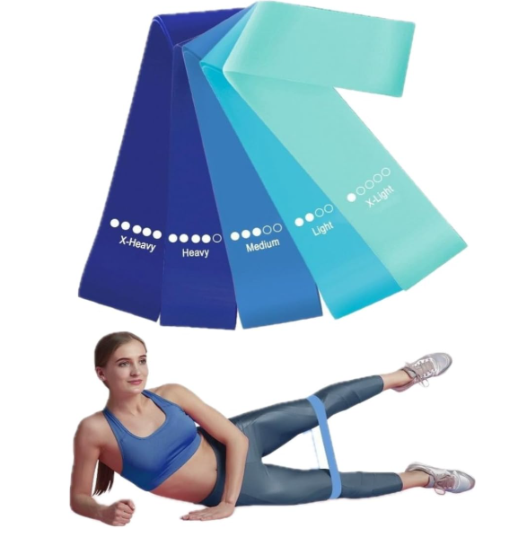
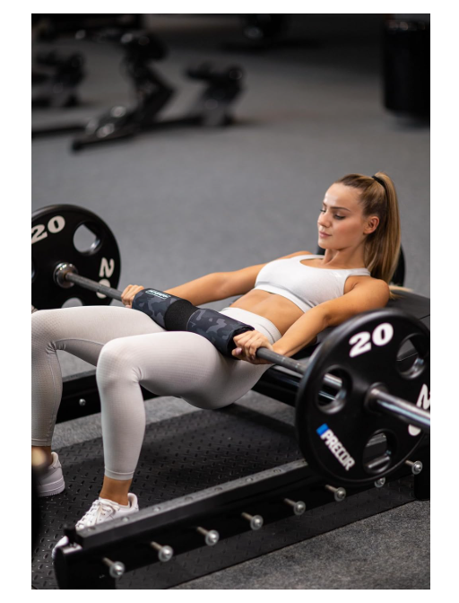

Let’s Gym Talk
Academia, ciência e motivação
Academia, ciência e motivação
Crescer glúteos é um dos objetivos mais comuns na academia, principalmente entre mulheres. Mas muita gente treina pesado e mesmo assim não vê resultado. Isso acontece porque glúteo não cresce apenas com "agachamento infinito".
Para hipertrofia real, você precisa de volume adequado, exercícios eficientes, progressão de carga e recuperação.
A hipertrofia muscular ocorre principalmente por estímulo mecânico (tensão), microlesões controladas e adaptação ao longo do tempo. Para isso, o glúteo precisa ser treinado com intensidade suficiente e com exercícios que realmente ativem suas fibras.
Estudos mostram que glúteo responde bem a treinos com boa amplitude, carga progressiva e exercícios multiarticulares e isoladores combinados.
Para a maioria das pessoas, o melhor é treinar glúteos entre 2 a 3 vezes por semana. Isso permite estímulo frequente e recuperação adequada.
Se você treina glúteo apenas 1 vez por semana, pode evoluir, mas normalmente o progresso é mais lento.
A literatura científica sugere que hipertrofia costuma responder bem com aproximadamente:
Mais séries não significa mais resultado se você não recupera. O ideal é subir o volume aos poucos.
Abaixo estão exercícios extremamente eficientes para crescimento:
O Hip Thrust é um dos melhores exercícios para glúteos porque gera alta ativação do glúteo máximo e permite sobrecarga progressiva com segurança.
Porém, o ideal é combinar Hip Thrust com exercícios que trabalham glúteo em diferentes ângulos, como agachamento e búlgaro.
Aqui vai um modelo completo para crescimento:
Se você treina glúteos 3x na semana, pode adicionar esse treino:
O melhor é usar cargas que te deixem com 1 a 3 repetições "na reserva" (RIR). Isso significa que você faz a série quase até falhar, mas mantendo técnica.
Se o objetivo é crescer, o ideal é manter um leve superávit calórico, ou pelo menos manutenção calórica com proteína adequada.
Recomenda-se geralmente 1,6g a 2,2g de proteína por kg para hipertrofia.
Indiretamente sim. Creatina melhora desempenho e força, permitindo maior volume e progressão de carga, o que pode gerar mais hipertrofia ao longo do tempo.
Crescer glúteos exige consistência, treino bem estruturado e alimentação alinhada. Foque em progressão de carga, boa execução e volume semanal adequado.
⚠️ Conteúdo educativo. Para lesões, dores ou condições médicas, consulte médico e profissional de educação física.
Alguns produtos podem ajudar a melhorar a ativação, execução e conforto durante treinos de glúteos.

Ótimo para ativação do glúteo e aquecimento antes do treino.
Qualidade: ⭐⭐⭐⭐⭐
Uso: Faça abdução e caminhada lateral antes do treino.
Ver na Amazon
Ajuda a estabilizar o core em agachamentos pesados e stiff.
Qualidade: ⭐⭐⭐⭐☆
Uso: Use apenas em cargas altas, sem depender dele sempre.
Ver na Amazon
Protege o quadril e permite fazer Hip Thrust pesado com conforto.
Qualidade: ⭐⭐⭐⭐⭐
Uso: Coloque na barra antes do Hip Thrust.
Ver na Amazon